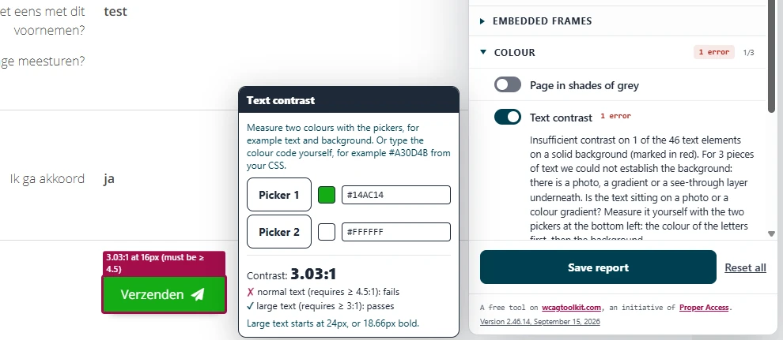

#1 - Knoptekst heeft te weinig contrast als de muis erop staat

In de formulieren op deze website wordt de achtergrond van knoppen lichtgroen (#14AC14) als de muis erop staat. Het contrast van de witte tekst op deze knoppen is dan 3,0:1. Dat geldt bijvoorbeeld voor de knoppen "Vorige stap", "Volgende stap", "Controleren", "Verzenden" en "Sessie verlengen", onder andere op deze pagina's:
- https://www.koggenland.nl/form/online-reageren-op-voornemen-tot-verkoop-of-verhuur/informatie-vooraf-0-3
- https://www.koggenland.nl/form/online-reageren-op-voornemen-tot-verkoop-of-verhuur/uw-gegevens-1
- https://www.koggenland.nl/form/contact-met-de-gemeente
Tekst op informatieve elementen houdt altijd genoeg contrast, ook als de muis erop staat.
User story
Ik heb een visuele beperking. Als ik met de muis op een link of knop sta, is de tekst soms slecht te lezen omdat het contrast te laag is. Ik verwacht dat de tekst in elke toestand goed leesbaar blijft.
Hoe te testen
Zet de muis op een knop en maak een schermafdruk. Open de WCAG Radar, zet de optie "Contrast" aan en meet met de pipetten de kleur van de tekst en van de achtergrond.
Oplossing
Zorg dat de knoptekst ook als de muis erop staat een contrast van minimaal 4,5:1 heeft met de achtergrond.
#2 - De randen van invoervelden hebben te weinig contrast
Op pagina's met formulieren hebben alle invoervelden een lichtgrijze rand (#DEE2E6) op een witte achtergrond. Het contrast tussen deze kleuren is 1,3:1. Dat geldt bijvoorbeeld voor deze pagina's:
- https://www.koggenland.nl/form/online-reageren-op-voornemen-tot-verkoop-of-verhuur/informatie-vooraf-0-3
- https://www.koggenland.nl/form/online-reageren-op-voornemen-tot-verkoop-of-verhuur/uw-gegevens-1
- https://www.koggenland.nl/form/contact-met-de-gemeente
User story
Ik heb een visuele beperking. Als ik een formulierveld wil invullen of een selectievakje wil aanvinken, zie ik de rand slecht omdat die nauwelijks afsteekt tegen de achtergrond. Ik verwacht dat de rand van elk formulierelement goed zichtbaar is, zodat ik het herken.
Hoe te testen
Meet het contrast tussen het element en de achtergrond ernaast met de Colour Contrast Analyser. De ondergrens is 3,0:1. Je kunt ook de WCAG Radar gebruiken, met de optie "Contrast".
Oplossing
Pas de kleur van de randen aan, zodat het contrast met de achtergrond ernaast minimaal 3,0:1 is. Dat geldt voor invoervelden, selectievakjes en keuzerondjes. Controleer de nieuwe kleur met een contrastchecker.